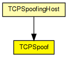
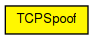

Sends fabricated TCP packets. This is a base implementation, you'll probably have to customize it in C++ according to what you want to send and when you want to send it.
Compatible with both IPv4 and IPv6.
The following diagram shows usage relationships between types. Unresolved types are missing from the diagram.
The following diagram shows inheritance relationships for this type. Unresolved types are missing from the diagram.
| Name | Type | Description |
|---|---|---|
| TCPSpoofingHost | compound module |
IP host with TCPSpoof in the application layer. |
| Name | Type | Default value | Description |
|---|---|---|---|
| srcAddress | string | "" |
local address; may be left empty ("") |
| destAddress | string | "" |
destination address |
| srcPort | int |
local port number |
|
| destPort | int |
destination port number |
|
| seqNo | int |
sequence number (-1 for TCP ISS) |
|
| isSYN | bool | true |
whether to set SYN bit on packet |
| t | double |
simulation time to send at |
| Name | Value | Description |
|---|---|---|
| display | i=block/square |
| Name | Direction | Size | Description |
|---|---|---|---|
| ipv4Out | output | ||
| ipv6Out | output |
// // Sends fabricated TCP packets. This is a base implementation, // you'll probably have to customize it in C++ according to // what you want to send and when you want to send it. // // Compatible with both IPv4 and IPv6. // simple TCPSpoof { parameters: string srcAddress = default(""); // local address; may be left empty ("") string destAddress = default(""); // destination address int srcPort; // local port number int destPort; // destination port number int seqNo; // sequence number (-1 for TCP ISS) bool isSYN = default(true); // whether to set SYN bit on packet double t @unit("s"); // simulation time to send at @display("i=block/square"); gates: output ipv4Out @labels(TCPSegment,IPControlInfo/down); output ipv6Out @labels(TCPSegment,IPv6ControlInfo/down); }